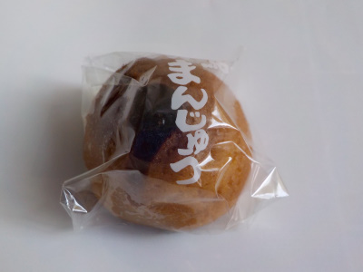
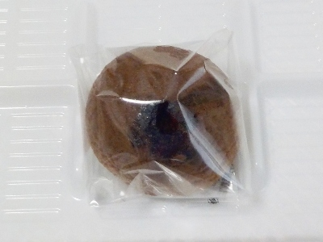

井山屋製菓の焼きまんじゅうはお茶請けにいいですね。
島根県出雲市多伎町口田儀848-3
更新日 : 2026/03/21

白あんの入った小さなお饅頭です。
小さいので食べやすいです。ちょっとしたお茶請けに丁度いいですね。
白あんの焼きまんじゅうって普段食べないので、なんかなつかしい味だなーって思いました。
2020/09/27 食べると美味しい。

2026/03/21 ビニールのまんじゅうの文字がなくなりました。
焼き饅頭ですが、皮がしっとり、餡子なめらかでした。